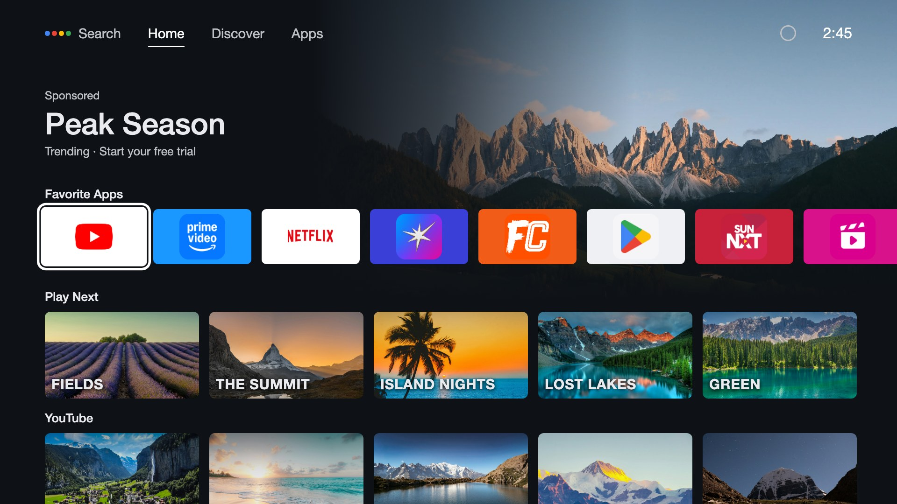
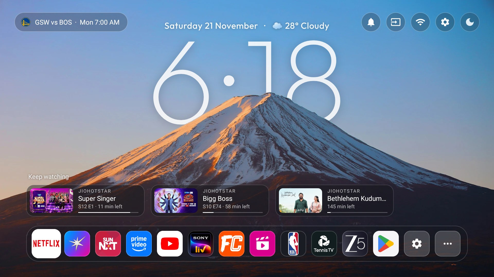

Fuji Home
Drag the handle to compare. Before: a typical stock Android TV home screen, recreated. After: Fuji Home on my TV.


After BeforeDrag the handle to compare. Before: a typical stock Android TV home screen, recreated. After: Fuji Home on my TV.


After Before